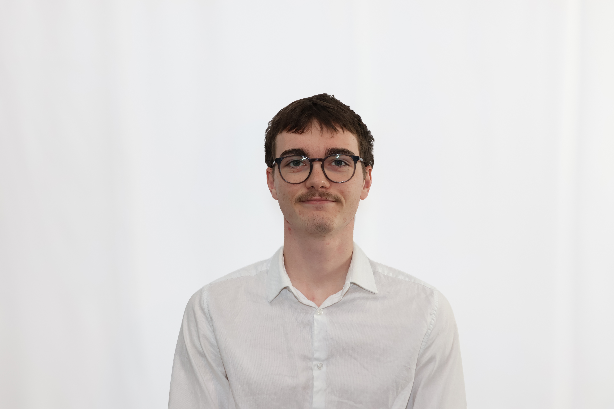

• SIGMA Clermont (2024–2027) — Filière Machines, Robots et Systèmes
• CPGE PT* Lycée Henri Loritz, Nancy (2022–2024)
Recherche Stage Fin d'Études (6 mois) : 15 mars au 25 septembre 2027 — Aéronautique, Spatial, Robotique (R&D mécanique, structures, essais, industrialisation).
📧 Email : tom.darsonval@sigma-clermont.fr
📱 Téléphone : +33 6 13 47 77 85
🔗 LinkedIn : linkedin.com/in/tom-darsonval-491250333
Prof. Xavier Balandraud — SIGMA Clermont
xavier.balandraud@sigma-clermont.fr
Prof. Milan Dvořák — Czech Technical University (CTU Prague) — Head of Dept. of Aerospace Engineering
milan.dvorak@cvut.cz
Développement actuel en dernière année à SIGMA Clermont autour des architectures stratosphériques / haute altitude à propulsion solaire.
Organisation d'événements et coordination logistique sur le campus de SIGMA Clermont : gestion d'équipe, budget et sens du collectif.
Vente, relation client, gestion des stocks et création du site internet de la boutique : compréhension concrète des besoins clients.
Aéronautique (membre actif d'associations spécialisées, titulaire du BIA) et pratique régulière des sports de plein air.